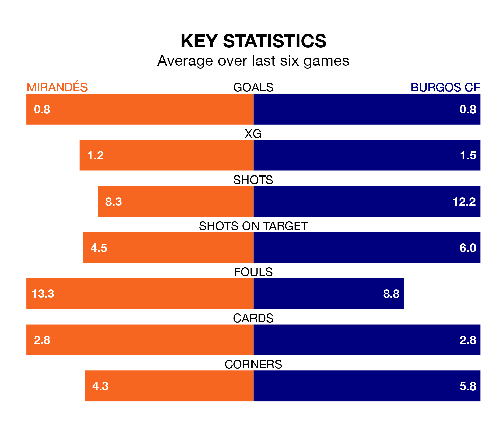

Mirandés face Burgos CF at Estadio Municipal de Anduva on late Sunday looking to secure a first win in six Segunda División games.
Mirandés have lost three and drawn two matches since they last earned three points – against CD Eldense on March 9.
They face a Burgos side who have won one and drawn two over that time.
With 43 goals in 35 games so far this season, Burgos are scoring more than average in the league with 1.2 goals per game. But they are conceding more than average too, letting in 44 goals at a rate of 1.3 per game.
Mirandés, meanwhile, are average scorers, with 1.1 goals per game. They have conceded 1.4 goals per game.
In the last 10 years, Mirandés and Burgos have played each other on seven occasions. They won two each, and they drew three times.
On average, Mirandés scored 1.1 goals and Burgos 1.0 in those matches.
Their last meeting was on December 9, when they played out a 0-0 draw.
With José Antonio Caro Díaz between the sticks, the away side can rely on one of the league's safest pair of hands. He has kept 14 clean sheets in his 35 appearances this season, and only two other 'keepers – SD Huesca's Álvaro Fernández and Leganés's Diego Conde – have been able to prevent the opposition scoring on more occasions in the Segunda División.
In the hosts' net, Ramón Juan Ramírez has eight clean sheets in 28 games. He has conceded a goal every 74 minutes, only slightly more often than the 77 minutes between goals for Caro Díaz.
Mirandés are 17th in the table after 35 games, of which they have won nine and drawn 11, earning 38 points.
Burgos are seven places ahead of Mirandés in 10th, with 15 wins and eight draws putting them on 53 points.
Mirandés's last match was on April 14, a 1-1 draw against Real Oviedo, with Gabriel Martínez Aguilera getting the goal for Mirandés.
Burgos beat Racing Santander 2-1 last time out, also on April 14, with Ander Martín and Curro Sánchez on the scoresheet.
Updated: 11:31 (UTC), 15/04/24